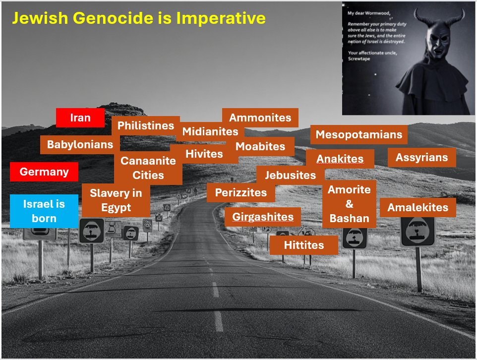

We were talking in our last discussion about how extremely racist Haman was — and it wasn't surprising, because that same hatred runs throughout the entire Bible. Once God brought Israel into being, it became something like a requirement for Satan to try to destroy them, at any cost. And that hasn't stopped. Three thousand years later, it's still happening.
I don't know history especially well, but doesn't that qualify as insane? People are prejudiced and tribal by nature, sure — but how do historians actually explain a hatred this specific, this persistent, across three millennia and dozens of different empires and cultures? For a Christian with fifty years in the faith, it's not really a mystery. For someone without that lens, I'm not sure how they account for it. And in an odd way, this is part of what proves the Bible to me. There's no natural reason for Israel to still exist today, apart from exactly what Scripture already told us would happen. What other people group has started with so little and endured the way Israel has?
I tried getting AI to generate a graphic depicting this. This is what I've got so far — still working on it.

Comments